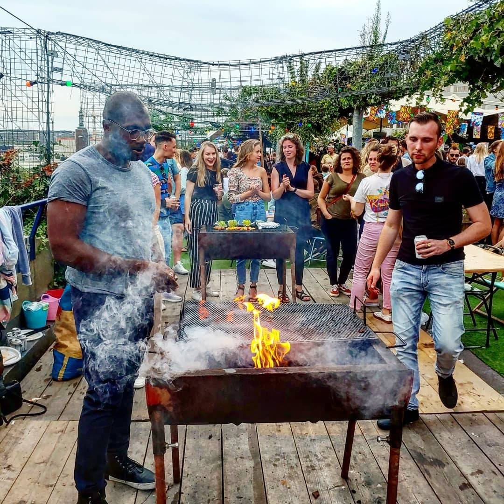
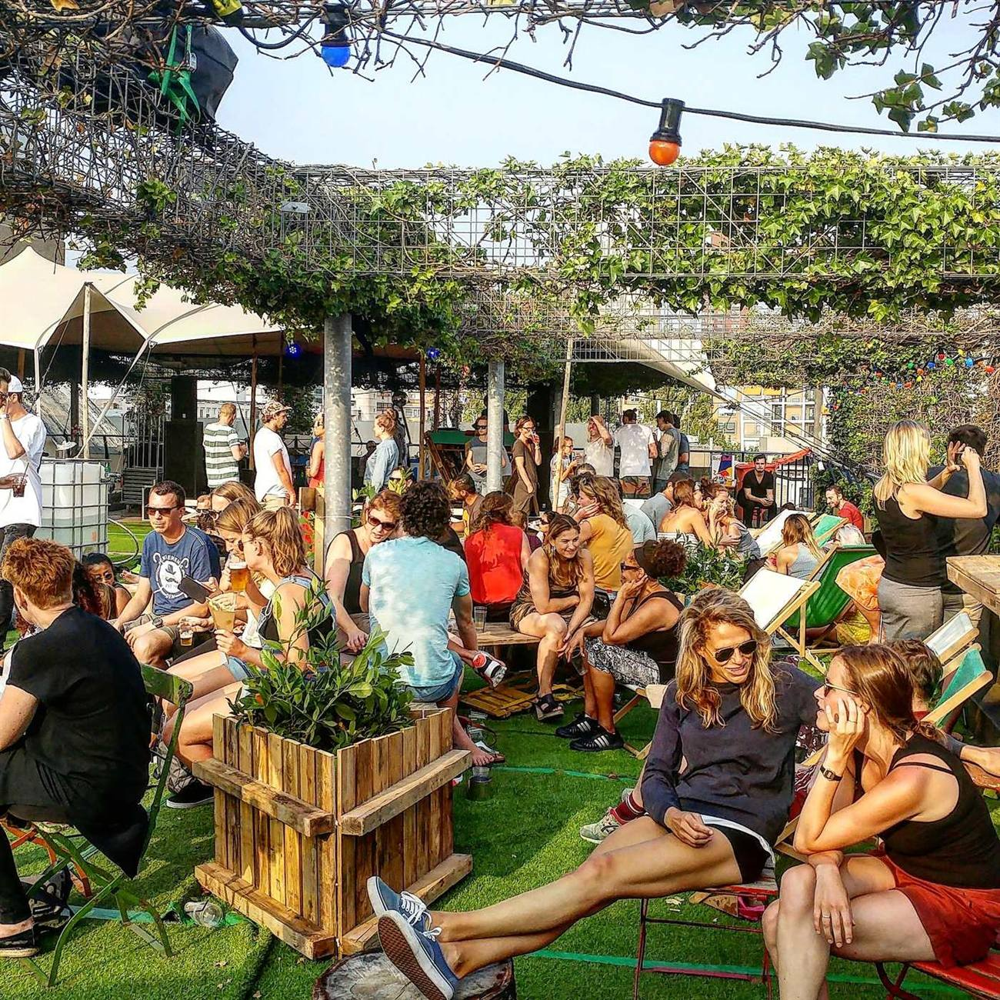
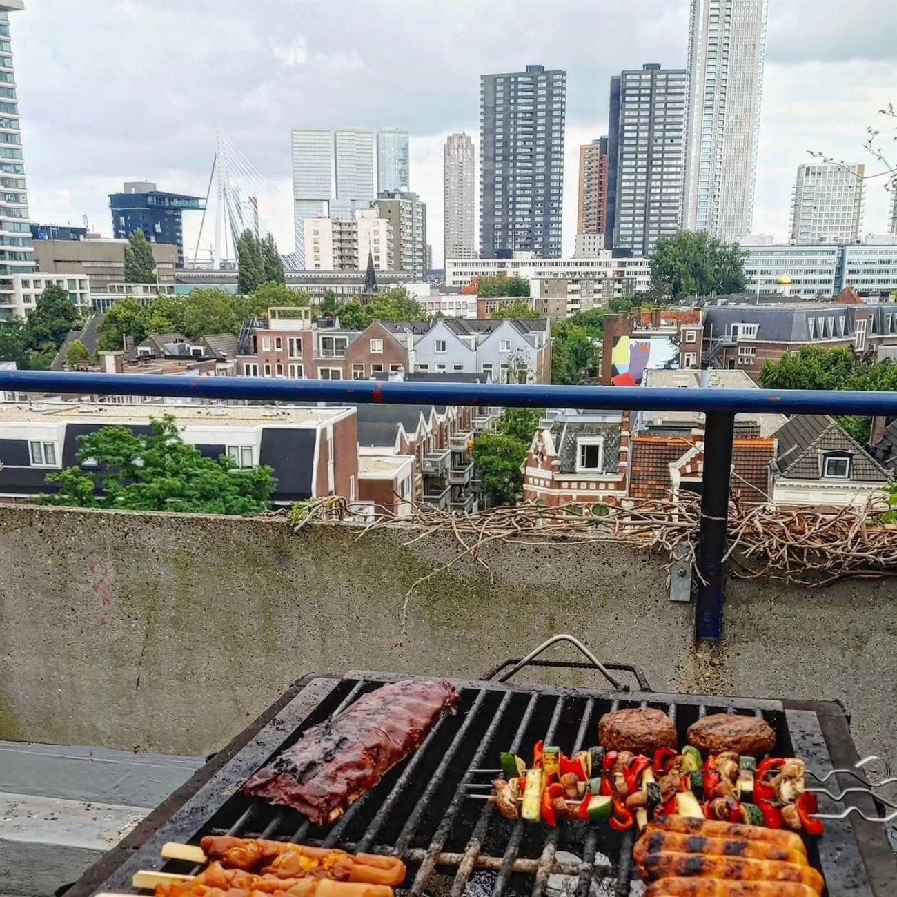
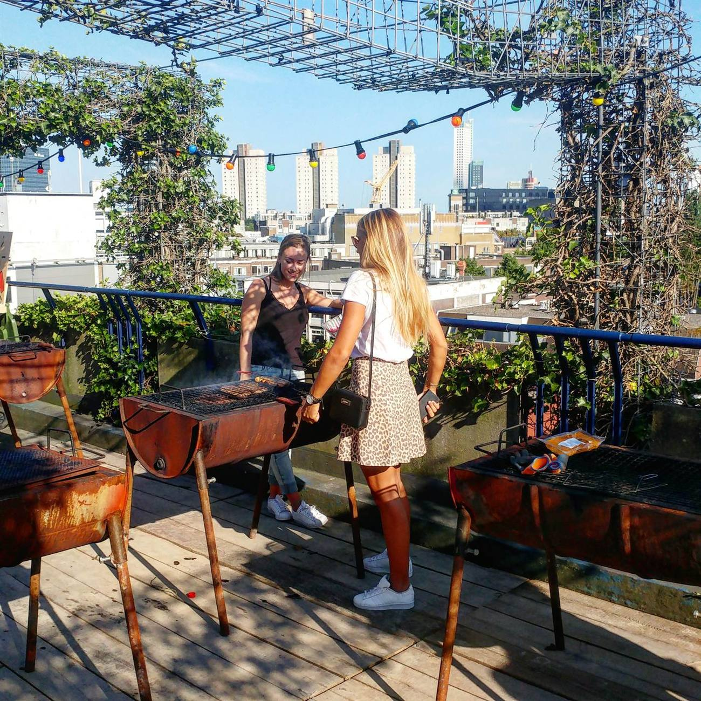
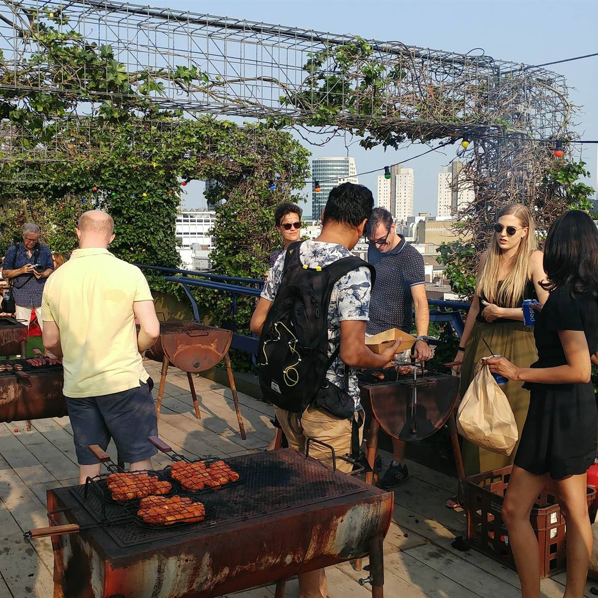
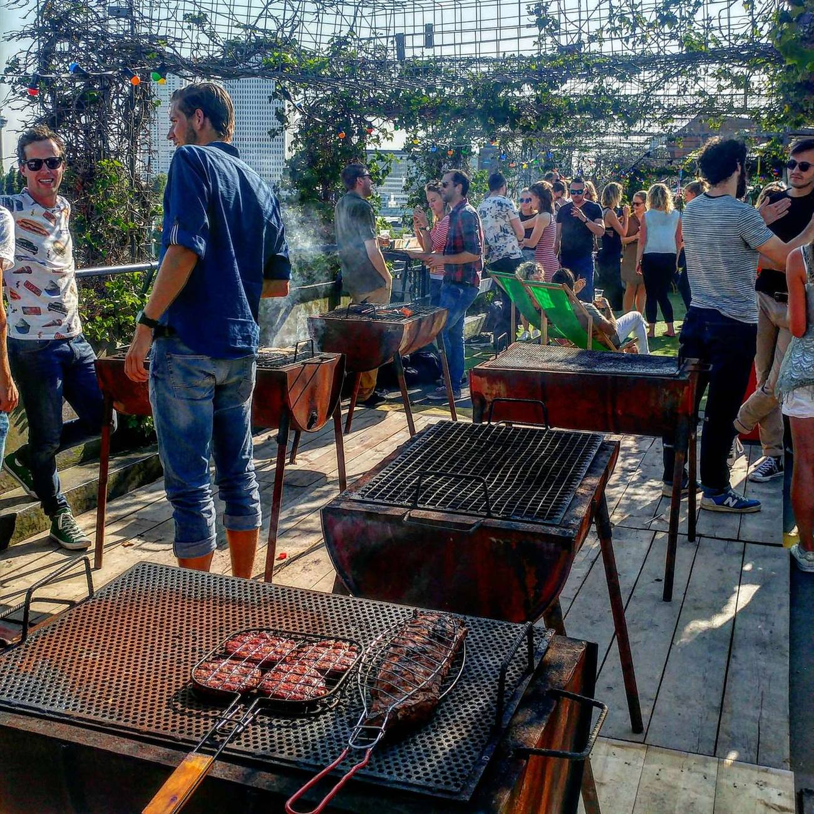
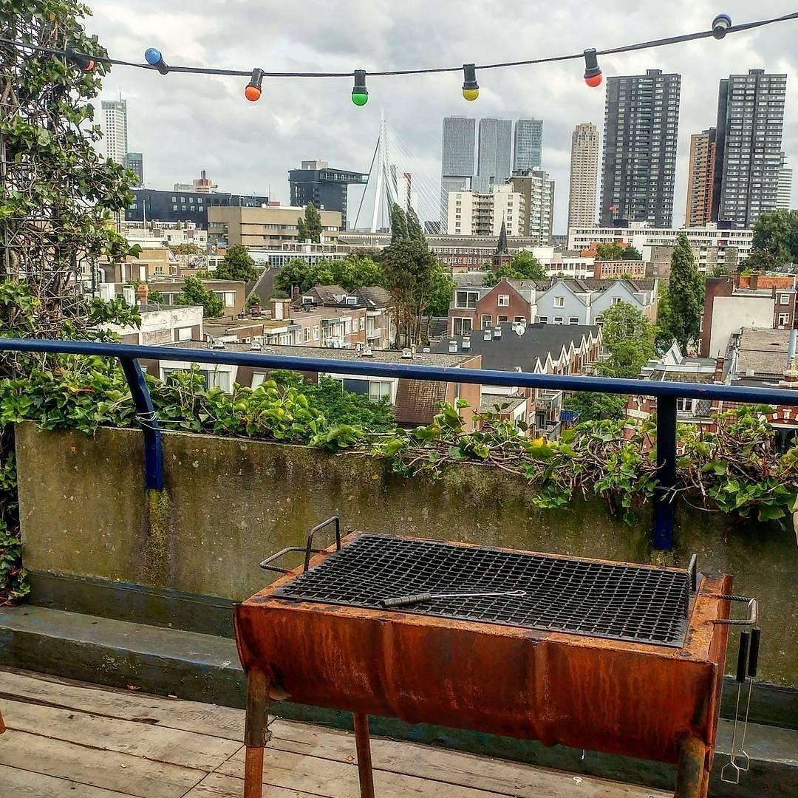

DÂK Rotterdam: twee zomers zonder, maar geen vaarwel
DÂK Rotterdam is voor mij de laatste jaren echt een vaste prik geweest in de zomer. Het is Rotterdam op zijn best. Vanaf de eerste editie die ik meemaakte, in 2016, was ik erbij, en ik heb daarna geen zomer meer overgeslagen. Bbq’en op een dak in Rotterdam, met een grote bar, waar je met je eigen vrienden zelf het vlees staat te draaien: het had ieder jaar weer iets magisch, en dat dat er steeds bij hoorde, vind ik wel goed.

Tussen alle vakanties door prikten we altijd wel twee of meerdere dagen op het DÂK. Lekker zomers, zelf wat vlees meenemen, grillen met uitzicht op onze prachtige stad, en meestal nog een kannetje sangria erbij om het zomergevoel compleet te maken. Vakantie in je eigen stad, zonder dat je Rotterdam hoefde te verlaten.

Voor wie het nog niet kent: DÂK is al sinds 2014 een jaarlijks pop-up dakpark, begonnen als passieproject van vier Rotterdamse vrienden op het dak van de parkeergarage aan de Westblaak. Wat klein begon groeide uit tot een evenement met zo’n 30.000 bezoekers per zomer. Zelf een asfalt parkeerdak omtoveren tot een groen terras, met bbq’s om zelf op te grillen, livemuziek op zaterdag, en van tafeltennis tot een cacaoceremonie. Precies het soort plek waar Rotterdam goed in is: iets lelijks veranderen in iets waar de hele stad blij van wordt.


In 2024 vierden ze nog hun tienjarig bestaan, een topeditie volgens de organisatie zelf. Maar in 2025 sloegen ze al een jaartje over, vanwege drukke privélevens en oplopende kosten. En nu, in 2026, dus voor het tweede jaar op rij geen DÂK. Deze keer door de slechte timing dat de garage waarop DÂK plaatsvindt precies in deze periode verkocht is aan de nieuwe eigenaar.

Omdat er dus weer geen nieuw DÂK komt, ben ik nog even mijn eigen fotoarchief ingedoken om zo toch nog een beetje de sfeer vast te houden. Foto’s van diezelfde daken, gemaakt op precies zulke avonden, met precies dat uitzicht dat nooit oud wordt.

De mannen en vrouwen van DÂK balen er zelf ook van, maar noemen het uitdrukkelijk geen vaarwel. Ze bouwen dit jaar liever aan een gezonde basis voor de komende tien jaar dan dat ze het concept overhaasten. Op hun eigen website staat het gewoon nog steeds: “See you next year.” Daar houden we ze aan.
Tot 2027 dan maar, DÂK. Dit jaar gaat het er helaas niet van komen, dus geniet dan nog even van onze archieffoto’s uit de afgelopen edities.

Praktisch
DÂK Rotterdam is er dit jaar niet, maar de organisatie belooft nadrukkelijk terug te komen. Hou de site en social media in de gaten voor het laatste nieuws: dak-rotterdam.nl en Instagram.
Iemand die dit moet weten?